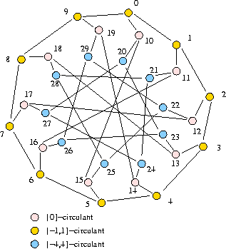
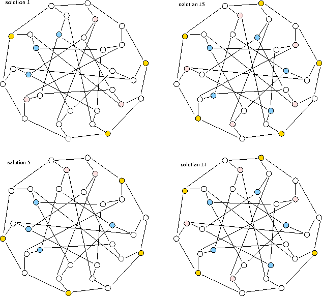

Arc-transitive (symmetric) graph
Kernel equation system solution space symmetries, conjecture on kernel numbers, clustering
The Tutte-Coxeter (or Levi graph) is a famous cubic graph on 30 with girth 8. It is constructed from X = {0,1, ..., 9} and its circulants {-1,1}, and {-4,4}.
The Tutte-Coxeter graph (also called Tutte's 8-cage or Levi Graph) is a generalized polygon as it is the point/line incidence graph of a generalized quadrangle. It is a 4-arc transitive cubic graph, first discovered by Tutte (1947).
The Tutte-Coxeter graph supports 3264 different kernels, among them obviously the set of 0-circulant (pink coloured) nodes of cardinality 10.
The unlabelled kernel number of the Tutte-Coxeter graph is 15.
The nauty program, a software package for computing the automorhism group of a graph, reveals us that Tutte-Coxeter supports four automorphic actions, very similar to the Coxeter graph:
The four generators of the Tutte-Coxeter graph automorphism group map on the kernel equation system solution space 15 disjoint orbits with the following representatively labelled choices, in increasing cardinalities of the choice and the corresponding orbit:
| # | Labelled choice | Choice cardinality | Orbit cardinality |
|---|---|---|---|
| 1 | ['2', '4', '8', '10', '13', '16', '27', '28', '29'] | 9 | 90 |
| 2 | [ '2', '4', '8', '10', '16', '17', '19', '21', '23', '25'] | 10 | 72 |
| 3 | ['1', '4', '7', '9', '15', '16', '18', '20', '21', '22'] | 10 | 120 |
| 4 | ['4', '7', '9', '10', '11', '12', '18', '25', '26', '27'] | 10 | 360 |
| 5 | ['1', '3', '5', '7', '10', '19', '22', '26', '27', '28'] | 10 | 360 |
| 6 | ['2', '4', '7', '9', '15', '16', '18', '20', '21', '22'] | 10 | 720 |
| 7 | ['0', '2', '4', '6', '8', '13', '21', '25', '27', '29'] | 10 | 720 |
| 8 | [ '1', '3', '8', '6', '12', '15', '19', '20', '24', '26', '28'] | 11 | 30 |
| 9 | ['0', '4', '6', '8', '12', '13', '15', '19', '20', '21', '26'] | 11 | 120 |
| 10 | ['1', '3', '5', '7', '12', '18', '19', '20', '24', '25', '26'] | 11 | 180 |
| 11 | ['0', '2', '5', '7', '11', '18', '19', '20', '22', '24', '26'] | 11 | 360 |
| 12 | ['0', '2', '4', '7', '15', '16', '18', '19', '21', '22', '23', '27'] | 12 | 10 |
| 13 | ['1', '3', '5', '7', '9', '10', '12', '16', '24', '23', '28', '29'] | 12 | 90 |
| 14 | ['0', '3', '6', '8', '11', '15', '17', '19', '20', '22', '24', '26', '28'] | 13 | 30 |
| 15 | ['0', '2', '4', '6', '8', '11', '13', '15', '17', '19', '20', '22', '24', '26', '28'] | 15 | 2 |
Some of the representative solutions listed above are shown in the next Figure.
